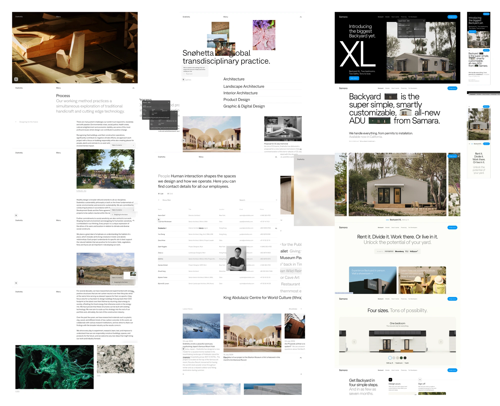
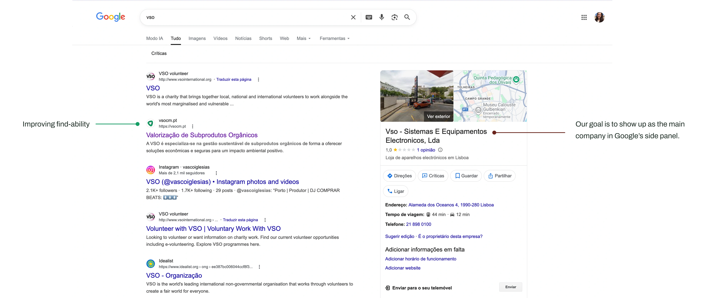

VSO — Valorização de Subprodutos Orgânicos
Design & Frontend • 2025 • React.js + GitHub

Context
VSO is a small Portuguese company with 10 years of experience in the collection, management, and decontamination of organic animal byproducts. Despite a decade of operation and a solid client base in the agricultural sector, the company had no digital presence beyond a logo. I was brought in to build that from scratch.
Problem
A credible business with no digital proof of it
VSO had been operating for over a decade with established clients — agricultural companies across Portugal. But when a potential client searched for them online, nothing came up. There was no website, no way to understand what the company did, and no way to verify it was legitimate. This created an immediate trust gap: the business was real, but it was invisible.
In a sector where clients handle biosafety-regulated processes, that invisibility has a direct business cost. A company that can't be found or vetted online is a company that loses deals before the first conversation.
Before
- No website or digital presence
- Only a logo as brand asset
- Client contact via email & phone only
- Low institutional visibility
After
- Live website with full company identity
- Consistent visual language across digital
- Clear service communication
- Findable and credible online presence
Build a digital identity, not just a website
The brief was to create VSO's digital presence from the ground up — starting from a single existing logo and building a full visual language and website around it. The goal wasn't just aesthetics: it was to make VSO feel like a company worth trusting, in a sector where trust is the product.
The site needed to communicate clearly what VSO does, who it serves, and why its approach to organic waste management is both innovative and sustainable — without overwhelming a non-technical audience.
Process
01 Discovery
Discovery was conversation-led — I worked directly with the business owner to understand both the company's identity and the audience they needed to reach. VSO's clients are Portuguese agricultural businesses, often small family operations. This shaped every decision that followed.
02 Benchmarking
Benchmarking focused on sustainability and waste management companies in Portugal and Spain. Most competitors were either too corporate or too technical — there was space for a voice that was clear, serious, and human.

03 Initial design
The design system was built from the existing logo outward — establishing typography, color, and tone that felt consistent and professional across the full site. Low and high-fidelity prototypes were iterated and validated with the client before moving to build.

04 Build
The frontend was built in React.js with support from GitHub Copilot to speed up prototyping, explore components, and reduce friction while learning. The goal is to keep evolving a workflow where design and development happen as a continuous loop, not a handoff.
05 Ship
The site is live and functional, providing VSO with a professional digital presence that matches the quality of service they deliver.
The website is currently being updated due to some bugs.
Design decision — language
The site was built entirely in Portuguese. This was a deliberate choice: VSO's target audience is Portuguese agricultural businesses, many of whom are unlikely to be comfortable in English. Designing in the user's language isn't just accessibility — it's respect for the audience, and it signals that this company understands who it's talking to. English localisation is planned for a future iteration to support potential international expansion.

Impact
Results
For a company that previously had no digital footprint, the most immediate impact is existence itself — VSO can now be found, vetted, and contacted online. The site gives the business a professional face that matches the quality of the service it provides, removing a friction point that was costing them potential clients before the first conversation even happened.
Metrics pending — monthly visits, bounce rate, and avg. session duration will be tracked post-launch.

Next steps
Iteration roadmap
The site is live and functional. The next phase focuses on two fronts: expanding the brand beyond the website, and deepening the product with a client portal for tank management — giving agricultural clients a self-service way to log deposits and track collections, replacing the current email and phone workflow.
- Client portal — tank management
- LinkedIn brand presence
- Full mobile responsiveness
- SEO optimisation
- Micro-animations